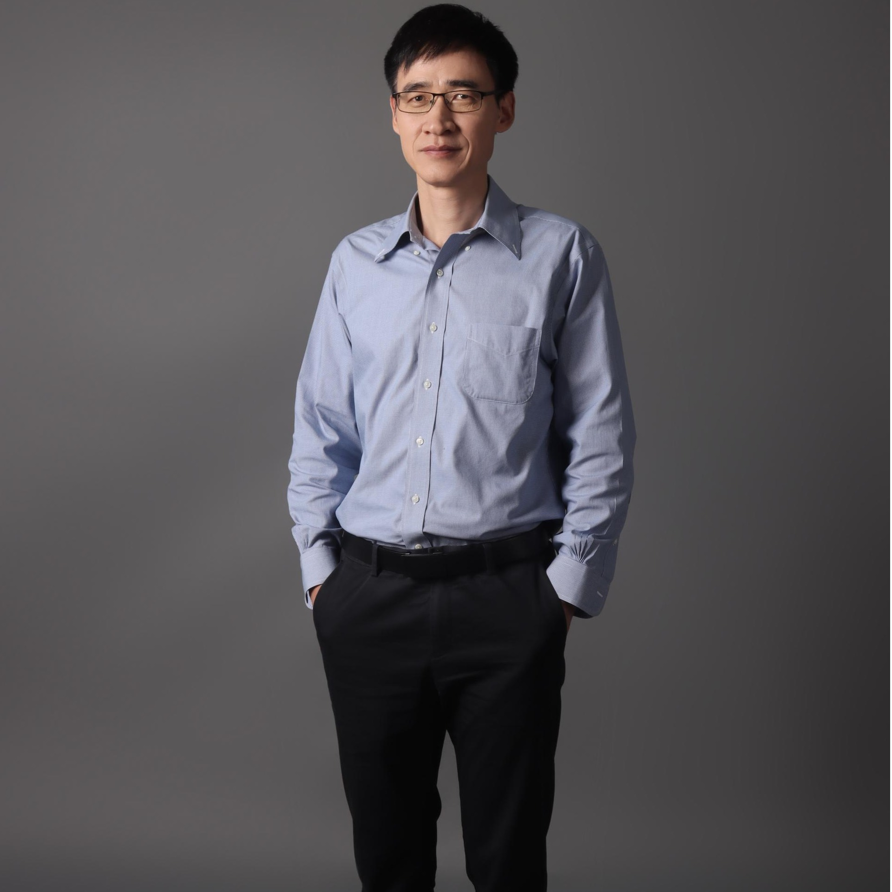

教授

深圳大学传播学院师资力量雄厚，梯队完备。目前有专任教师58人，其中正教授15人，博士生导师14人，国家教学名师、教育部教指委、省级教学名师、广东省千百十人才等9人。其中既有老一辈代表性学者何道宽教授、吴予敏教授、辜晓进教授等，也有中生代的知名学者王晓华教授、丁未教授、尹连根教授等，更有年青学者代表周裕琼教授、李明伟教授、常江教授等。
-
58专职教师
-
15正教授
-
14博士生导师
师资队伍
-
 巢乃鹏/教授个人简历：巢乃鹏，博士，2002,4-2019,3任教于南京大学新闻传播学院，入选南京大学青年骨干教师（2008），南京大学优秀中青年学科带头人(2011)。2019年4月调至深圳大学传播学院任教，现为深圳大学特聘教授、博士生导师、深圳大学传播学院院长、国家社科基金重大项目“大数据时代计算传播学的理论、方法与应用研究”首席专家，入选“国家特支计划”哲学社会科学领军人才；担任中国新闻史学会智能与计算传播专业委员会（国家二级...研究领域：网络传播与新媒体研究、计算传播研究
巢乃鹏/教授个人简历：巢乃鹏，博士，2002,4-2019,3任教于南京大学新闻传播学院，入选南京大学青年骨干教师（2008），南京大学优秀中青年学科带头人(2011)。2019年4月调至深圳大学传播学院任教，现为深圳大学特聘教授、博士生导师、深圳大学传播学院院长、国家社科基金重大项目“大数据时代计算传播学的理论、方法与应用研究”首席专家，入选“国家特支计划”哲学社会科学领军人才；担任中国新闻史学会智能与计算传播专业委员会（国家二级...研究领域：网络传播与新媒体研究、计算传播研究 -
常江/教授个人简介：常江，深圳大学特聘教授，入选国家重大人才工程，国家社科基金重大项目首席专家，深圳市国家级领军人才。北京大学学士（2005）、硕士（2008），清华大学与美国西北大学联合培养博士（2011），瑞士日内瓦大学博士后（2016）。现任深圳大学全球传播研究院执行院长，深圳大学媒体融合与国际传播研究中心主任，深圳大学数字媒体文化实验室负责人。在调入深大工作之前，曾任教于中国人民大学新闻学院、清华大学新闻与传播...研究领域：数字新闻学研究、数字媒体文化研究、视听传播研究
-
何建平/教授个人简历： 何建平，男，生于1973年，祖籍四川南充，毕业于北京师范大学艺术与传媒学院，电影学博士，广东省“千百十人才”培养对象。2002年7月起任教于深圳大学传播学院。2017年晋升为教授，2019年被评为博士生导师。2009年--2014年担任深圳大学传播学院广告系主任，现任国家广告研究院南方分院执行院长。2006年12月--2007年4月赴日本电通公司访学。学术兼职：中国高校影视学会理事，中国高校影视学会影视产业委员会理事，深...研究领域：影视艺术与产业、广告与品牌传播
-
黄玉波/教授个人简历：黄玉波，现为深圳大学传播学院副院长、广告系教授，博士生导师；南昌大学哲学学士（1992）、哲学硕士（1995），武汉大学新闻学博士（2006），拥有八年新闻采编及媒介经营管理实践经历，韩国东义大学访问学者（2013），目前担任中国高等教育学会广告教育专业委员会副秘书长、中国新闻史学会广告与传媒发展史专业委员会常务理事、中国新闻史学会新闻传播教育史研究委员会常务理事、中国公关学会（PRSC）常务理事、中国广...研究领域：媒介融合与规制、数字营销传播、广告策略与品牌管理
-
黄春平/教授个人简历：中国社会科学院研究生院新闻学专业博士，中国社会科学院哲学所博士后，深圳大学传播学院教授，博士生导师；香港城市大学（2011）访问学者。广东省省级千百十人才（2010），深圳市领军人才（2010），深圳大学荔园优秀学者（2013）。研究领域为新闻传播史。主要学术期刊论文： 1. 黄春平：《建国70年报刊史书写中共产党报刊入史的演进研究》。《国际新闻界》2020年第9期。2. 黄春平：《中国特色新闻学科建设的历程与问...研究领域：新闻传播史
-
李明伟/教授个人简历：李明伟，1978年生人，2005年获得中国社会科学院文学博士学位，2002年获得河南大学文学学士学位。2005至今在深圳大学传播学院从事教学科研。2008年晋升为副教授，2013年晋升为教授，2019年担任博士生导师。2013年被认定为深圳市高层次人才，入选深圳大学首批“荔园优青”培养对象（2013-2016，2016-2019）。2014年入选广东省首届高校优秀青年教师培养对象。论著荣获广东省哲学社会科学优秀成果著作类二等奖，深圳市哲...研究领域：媒介环境学、广告法规与管理
-
刘蒙之/教授刘蒙之，深圳大学传播学院教授，博士生导师。复旦大学新闻学院博士毕业，曾任陕西师范大学新闻与传播学院教授，博士生导师，国际非虚构写作研究中心主任。香港浸会大学传理学院（2019）、浙江大学文学院访问学者（2022），汕头大学长江新闻学院特聘研究员，北京印刷学院马克思主义学院学术委员会委员，多家CSSCI期刊审稿专家。入选教育部高校和新闻单位互聘交流“双千计划”（2021），任《陕西日报》社会部副主任。2024年秋季学...研究领域：非虚构写作、编辑出版学、媒介与青年发展研究、媒介社会学
-
彭华新/教授个人简历：彭华新，教授，博士生导师，新闻学博士，美国威斯康星大学麦迪逊分校访问学者（2018.8-2019.8），曾被评为深圳大学“荔园优秀学者”、深圳市优秀教师。曾任职于多家媒体机构，期间在《人民日报》《光明日报》《新华每日电讯》等报刊发表新闻及评论文章多篇。在深圳广播电影电视集团工作期间，先后担任记者、主编等职务，获各类新闻奖十余项。从2013年始至今任教于深圳大学传播学院。现兼任深圳大学传媒与文化发展研究...研究领域：媒介社会学、新闻理论
-
尹连根/教授个人简历：深圳大学传播学院教授、博士生导师，深圳大学传媒与文化发展研究中心主任。复旦大学新闻学博士，伦敦政治经济学院（The London School of Economics and Political Science, UK）“文化与社会”硕士；萨蒙弗雷泽大学（Simon Fraser University, Canada）、香港城市大学、昆士兰科技大学（Queensland University of Technology, Australia）访问学者。著有《纪实写作与公共说理》一书。研究领域：新媒体的公共性、新闻业转型、新闻社会学
-
杨洸/教授个人简历：杨洸，教授、博士生导师。现任传播学院副院长。博士毕业于香港浸会大学。2013年入职深圳大学传播学院，网络与新媒体系专任教师。早前曾任教于暨南大学新闻与传播学院、澳门大学传播系。深圳市鹏城孔雀计划特聘岗位。主持国家级和省市级多项基金项目，在《新闻与传播研究》等知名学术刊物上发表中英文论文30余篇。学术成果获得多项省市级政府奖和学会奖，荣获广东省第八届哲学社会科学优秀成果奖二等奖、深圳市第十届...研究领域：网络传播、舆论极化、算法新闻、网络文明、健康传播
-
杨莉莉/教授个人简历杨莉莉，传播学院教授，视觉传播方向学研导师，数字营销传播方向专硕导师。鲁迅美术学院摄影系本科及硕士毕业，2003年入职深圳大学文学院，现为传播学院广告系教师。第十届“中国摄影金像奖”摄影理论奖获得者，日本电通广告株式会社高级访问学者，深圳市高层次专业人才。两度获得深圳大学优秀本科课堂教学二等奖，所著《商业摄影实训教程》（第3版，中国人民大学出版社，2021年）为“新编21世纪新闻传播学系列教材”、...研究领域：社交摄影、图像舆情、视觉传播、当代艺术摄影
-
虞鑫/教授虞鑫，深圳大学传播学院“百人计划”教授、博士生导师。清华大学学士、博士，牛津大学博士后。曾任清华大学新闻与传播学院副教授、博士生导师，院长助理、新闻舆论与国家治理研究中心执行主任，入选仲英青年学者奖励计划、清华大学紫荆学者计划。2024年秋季学期加入深圳大学传播学院。兼任中国新闻史学会中国特色新闻学专业委员会常务理事、秘书长，《全球传媒学刊》轮值副主编、《西安交通大学学报（社会科学版）》青年编委。...研究领域：新闻理论、国际传播、舆论与国家治理